Exercise 2: Masking with the Gradient Tool
Understanding how the leverage the unique power of the Gradient Tool in masking is vital for any Photoshop user. Knowing how to blend images together not only delivers a professional look, it’s also quick and easy to achieve. In this exercise we will explore and witness the effects of masking different styles of the Gradient Tool.
You will know how to:
- Create a blank mask
- Modify a mask with the Gradient Tool
- Toggle the visibility of a mask on/off (Enable/Disable)
- View a mask
- Delete a mask
- and fill a mask
1. Opening the image to be masked ...
- Open eye.jpg in Adobe Photoshop (image right)
- Source (and thanks to): Face Paint by Alice Birkin
- Tap the letter 'f' so you're working on a solid grey background
- Note: Tapping 'f' a second time gives you a black background
- Note: Tapping 'f' a third time takes you back to normal viewing mode
- From the Menu Bar, go to File > Save As...
- Save your file as a .psd (download ZIPPED .psd of this step)
- a .psd (Photoshop Document) will preserve ALL your layers and settings
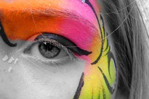
2. Add a pixel mask …
- Open the MASKS panel
- Click the [Add a pixel mask] button (image right)
- Note: By default, a white (inert) mask is added
- Save your file (download ZIPPED .psd of this step)
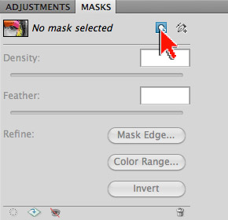
3. Add a solid color fill layer ...
- At the bottom of the LAYERS panel, click the ‘Create new fill or adjustment layer’ icon (it looks like a black & white cookie)
- From the options available, choose ‘Solid Color…’
- In the Pick a solid color: dialogue box, select black as the fill color and hit OK
- Note the effect: The solid color fill layer was added above the eye layer
- Note: Added layers always come in above the layer currently selected
- Note: Photoshop gives you a FREE mask when you add a fill or adjustment layer
- In the LAYERS panel, drag the solid color layer below the eye layer
- Save your file (download ZIPPED .psd of this step)
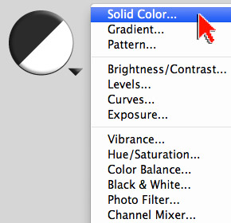
4. Select and set the gradient tool …
- In the Tool bar, select the Gradient Tool (image right)
- In the Options bar, reset the Gradient Tool
- To reset a tool, right-click on the tool icon in Options bar (left end) and choose Reset Tool
- In the Options bar, select the ‘Black, White’ gradient preset
- For gradient style, choose the Linear Gradient
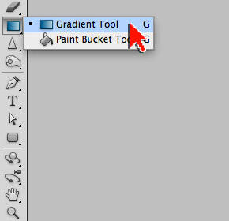
5. Mask with a linear gradient …
- In the Layers Panel, select the mask attached to the eye layer
- Note: There are 4 selectable thumbnails in the Layers panel
- Note: When masking it is critical to be aware of which thumbnail is selected. Many masking errors and issues result from a user being unaware of which thumbnail is highlighted in the Layers panel
- With the Gradient Tool, click-hold then drag-release a gradient across your image from right to left (image right)
- Note: You have created a gradient mask
- Drag out another gradient – notice that this second gradient replaces your previous one
- Experiment by dragging in different directions
- Experiment by adjusting the drag-release distance
- Save your file (download ZIPPED .psd of this step)
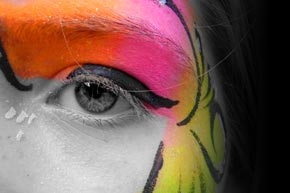
6. Some masking nuances …
- To Toggle the visibility of a mask on/off:
- Click the Disable/Enable button (little eye) at the bottom of the MASKS panel
- To view a mask: (image right)
- On a Mac, Option-click directly on the mask thumbnail
- On a PC: Alt-click directly on the mask thumbnail
- Click the layer thumbnail to return to normal viewing
- To reset a mask to default white:
- DEMO: Delete and create a new mask
- Select the mask attached to the eye layer. From the Menu bar, go to Edit > Fill. Choose white as the fill color
- Demo: Masking the solid color fill layer
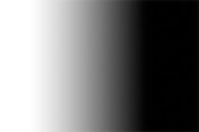
7. Mask with a radial gradient ...
- In the tool bar, select the Gradient Tool
- For gradient style, choose the Radial Gradient
- Click-hold and drag outward from the center of the eye - then release
- Note: If the gradient mask created is the opposite of what you feel is intuitive, select the Reverse check box in the Options bar
- Experiment by dragging a few additional radial gradients (image right)
- Save your file (download ZIPPED .psd of this step)
- Tap the letter 'f' until you return to normal screen mode
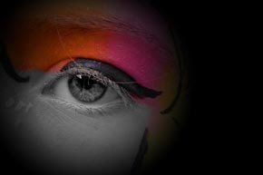
8. Open a second image ...
- Open leaves.jpg in Adobe Photoshop
- Source (and thanks to): Colorful Autumn Leaves by Vera Kratochvil
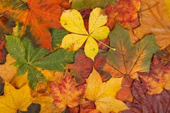
9. Move and re-stack ...
- With the Move Tool, drag the leaves.jpg on top of the eye.jpg
- Note: Adding SHIFT after you begin dragging, and letting SHIFT go after you drop, aligns the leaves.jpg to the center of eye.jpg
- Reality check: Pixel counts
- If necessary, use the Move Tool to align the two layers
- In the Layers Panel, drag the leaves layer below the eye layer (image right)
- Save your file (download ZIPPED .psd of this step)
- Close the leaves.jpg image (do not save)
- Tap the letter 'f' so you're working on a solid grey background
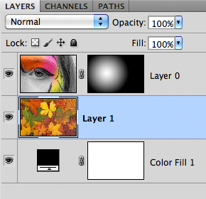
10. Experiment with different gradients ...
- In the Layers Panel, select the mask attached to the eye layer
- Note: There are 5 selectable thumbnails in the Layers panel
- Note: When masking it is critical to be aware of which thumbnail is selected. Many masking errors and issues result from a user being unaware of which thumbnail is highlighted in the Layers panel
- Experiment by blending the two image layer together with the linear, radial, angled, reflected, and diamond styles (image right)
- Note: As noted above, some gradient styles will draw more intuitively if you click the Reverse check box in the Options bar
- Save your file (download ZIPPED .psd of this step)
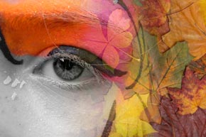
11. Adjust the leaves ...
- In the Layers Panel, select the leaves layer thumbnail
- Open the ADJUSTMENTS panel
- Click on the Create a new Black & White adjustment layer icon (image right)
- Note: The adjustment layer was added above the leaves layer
- Note: Added layers always come in above the layer currently selected
- Note: Photoshop gives you a FREE mask when you add a fill or adjustment layer
- In the ADJUSTMENTS panel, experiment with the various Black & White adjustment sliders
- Save your file (download ZIPPED .psd of this step)
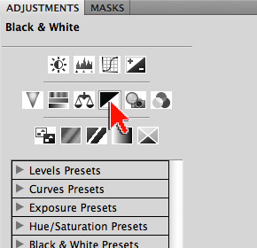
12. Mask the adjustment ...
- In the Layers Panel, select the mask attached to the black & white adjustment layer
- Note: There are 5 selectable thumbnails in the Layers panel
- Note: When masking it is critical to be aware of which thumbnail is selected. Many masking errors and issues result from a user being unaware of which thumbnail is highlighted in the Layers panel
- Experiment masking the black & white adjustment with the linear, radial, angled, reflected, and diamond styles (image right)
- Save your file (download ZIPPED .psd of this step)
- Tap the letter 'f' until you return to normal screen mode
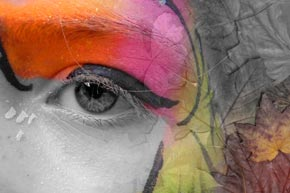